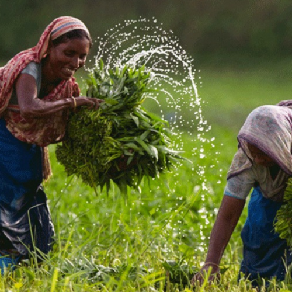

Crop Details

Rice
Best growing season: Monsoon Soil type: Loamy, well-drained Common varieties: BRRI Dhan, Hybrid Rice
See More
Wheat
UBest growing season: Winter Soil type: Well-drained sandy loam Common varieties: BARI Gom, Shatabdi
See More

Vegetables
Common types: Tomato, Brinjal, Cucumber Ideal soil: Rich organic matter, pH 5.5–7.5 Growing tips: Proper spacing, pest monitoring
See More